Hello and welcome to the second issue of the monthly Wizard Fella Islands newsletter!!!
It was a short month, however I still got some new things to show you!
Since last month I've been working on the first part of this Island and now I can proudly say it's
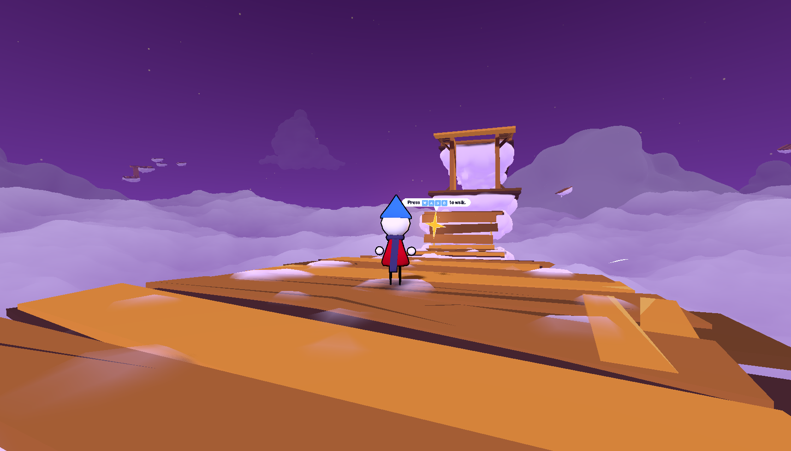
The very start of the level
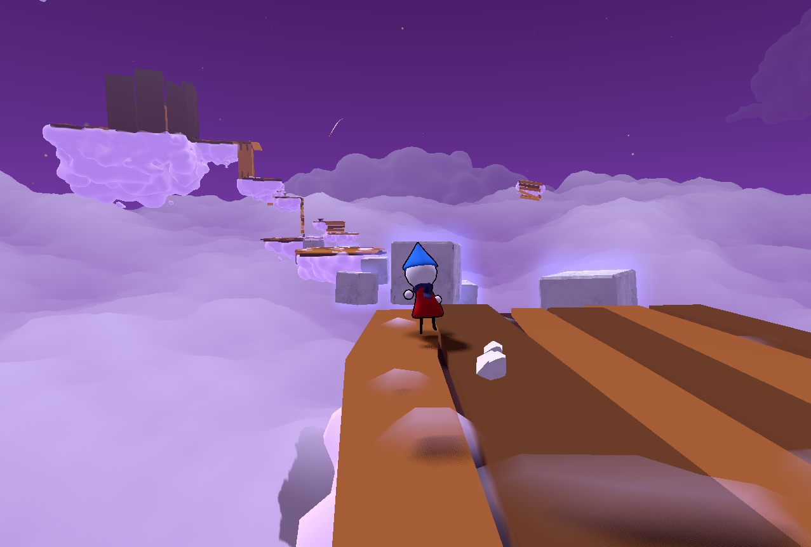
First challenge
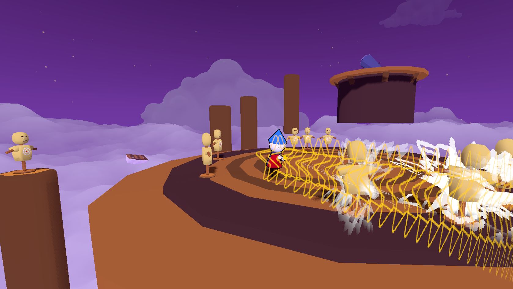
Learning attacks
Besides making assets to replace the grey boxes, I've also done a few playtests that helped me find bugs and issues that the original layout had. The second part of this Island is supposed to be a challenge, where you have to complete it under a certain time. I will try to work on completing the layout of this next part over the following month.
Up until now you could only play the game with mouse and keyboard, but now the game is now fully* playable using any common controller
*I didn't add camera zoom in/out mappings for controllers yet because I have no idea which keys that should be
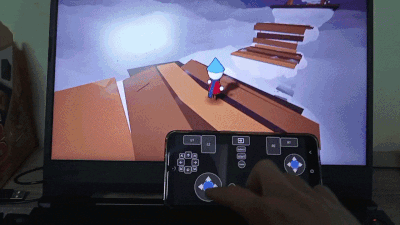
Me testing controller input using a controller app on my phone
Yes I don't have a real controller to test this with but if this works then the real thing HAS to work.
In addition, I made dynamic Action Prompts which display the key for an action based on your current device
Shoutout to KenneyNL for the icons!
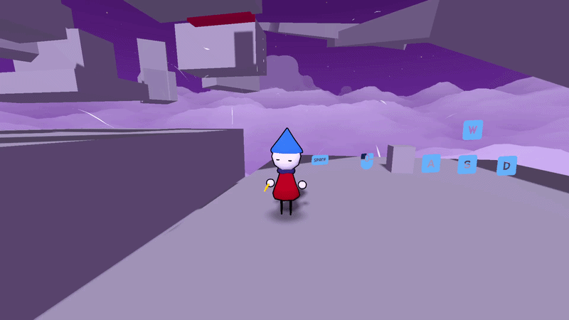
Dynamic Action Prompts
While on the topic of inputs, I'd like to add the ability to remap actions at some point but that might just have to wait until...
I said last month that I'd work on the Diary and I did. However it has proved to be quite a challenge.
You see, in the previous game the diary was just a 2d UI element, but this time I want it to be a 3d model because it looks cooler.
But that means I have to put interactive 2d pages on a 3d model and then put that 3d model over the screen. Which turns out to be quite convoluted.
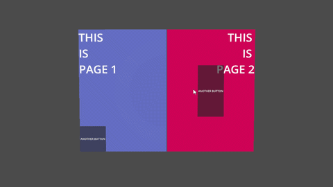
Prototype of the diary
Here you can see a very rough proof of concept I did for the diary. It works for now so hopefully I can finish it by next month.
Dialogue
I found a way to overcome the problems I mentioned in the last issue so I added three new BBCode effects
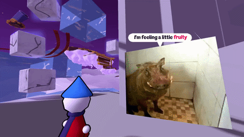
BBCode Rainbow Effect
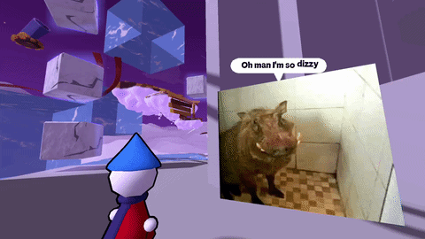
BBCode Wave Effect
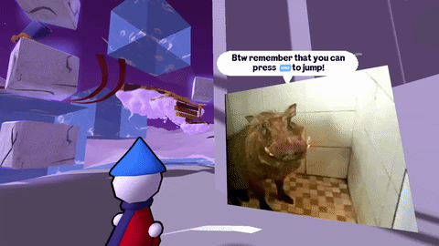
BBCode Action Prompt Effect
Water
Water now has an underwater effect that gets applied to the screen
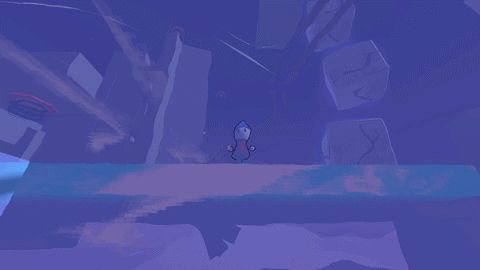
Underwater Effect
Saving
There is now a system in place to save and load data in the game
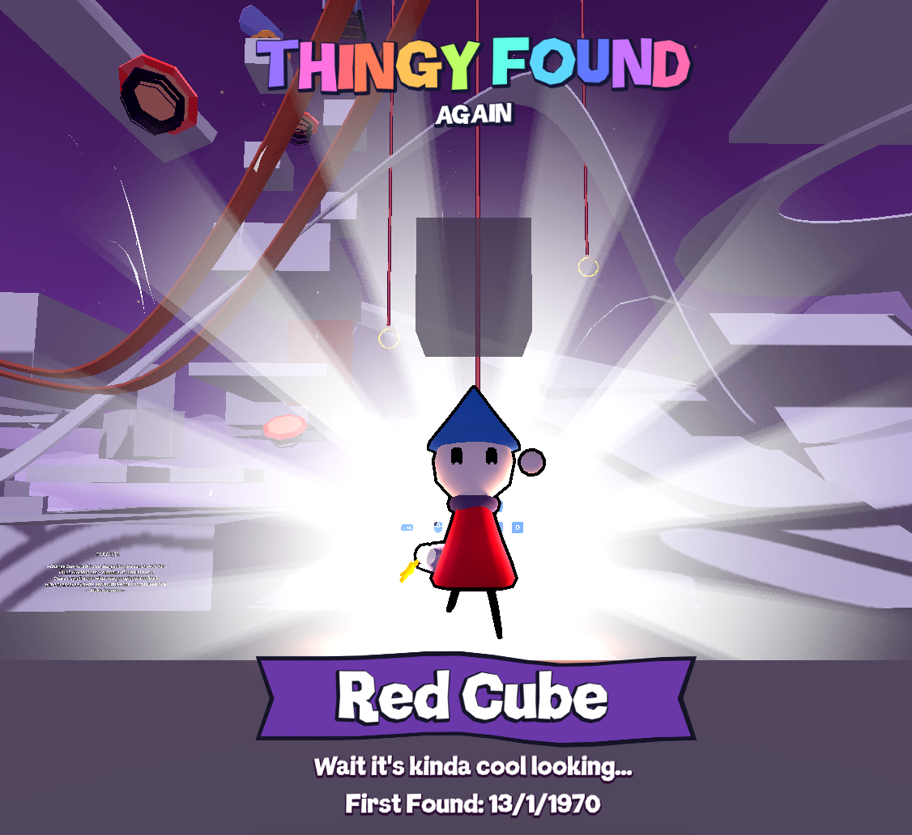
Collecting a thingy that you've found before
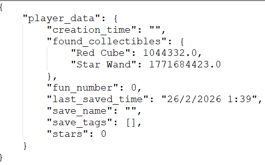
The inside of a save file
It's probably something that will receive small changes as I find out new things that need to be saved.
Oh and also there is no settings yet so that might be something I'll work on next month.
And that's it for now! I didn't find a place to put this, but I'd also like to work on more interesting props next month (like the cannons or bounce pads) because I think that will be necessary for making interesting levels.
Thank you for reading and until next time!!!
PS: Let me know if you'd like to hear about more in-progress things like The Diary
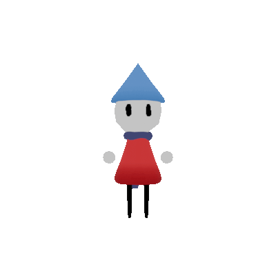
NOOOOOOOOOOOOOOO